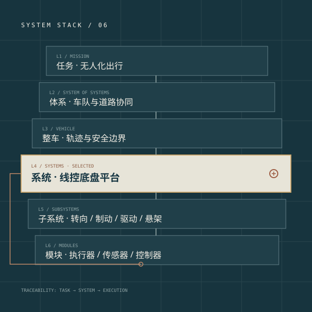

Assignment 01 · System hierarchy
线控底盘平台的层级定位
与六层分析
本作业先把研究对象从“底盘总成”收敛为“面向整车运动控制的系统集成平台”，再沿任务、体系、整车、系统、子系统和模块六个层级检查输入、职责、边界与输出。

1. 系统边界
系统职责
运动意图到执行能力
接收自动驾驶域给出的轨迹、速度、加速度和安全停车请求，分配转向、制动、驱动与悬架指令。
系统状态
协同、仲裁与降级
持续聚合执行器状态，判断剩余运动能力，完成故障隔离、备份接管和最小风险机动。
外部边界
不承担感知与规划
感知算法、全局路径规划、云端调度以及单一执行器机械本体设计不属于本系统范围。
线控底盘平台位于 Systems 层。它向上承接整车运动目标，向下组织各执行子系统；单看某一电机或某一控制器都不足以描述平台职责。
2. 六个层级
| 层级 | 本项目的对象 | 核心问题 | 与线控底盘平台的关系 |
|---|---|---|---|
| L1 任务 | 高级别自动驾驶出行 | 为什么需要这套系统？ | 提供安全、连续、可维护的车辆运动能力。 |
| L2 体系 | 车队、云控、路侧、补能、救援、监管 | 由谁共同完成使命？ | 接收 ODD、任务、风险提示与救援约束。 |
| L3 整车 | L4 Robotaxi 或无人接驳车 | 以什么产品承载任务？ | 将平台能力收敛为轨迹跟踪、稳定性和舒适性。 |
| L4 系统 | 线控底盘平台 | 如何形成整车运动能力？ | 完成意图解释、执行分配、仲裁、降级和状态反馈。 |
| L5 子系统 | 转向、制动、驱动、悬架 | 能力由什么分担？ | 分别承担横向、纵向和垂向运动控制。 |
| L6 模块 | 电机、控制器、传感器、电源、通信 | 物理功能如何实现？ | 向平台提供可观测、可诊断的执行与反馈能力。 |
3. 同一任务向下传递
以下以“城市路口低速左转”为例，检查六个层级是否形成连续的需求链。该示例同时作为作业 03 和作业 04 的场景基线。
L1 / MISSION完成安全接驳
在不依赖车内驾驶员的情况下完成行程。
L2 / SoS体系给出边界
云控下发任务、ODD 和风险信息，监管约束运营条件。
L3 / VEHICLE整车规划运动
选择左转轨迹、目标速度、加速度和停车位置。
L4 / SYSTEM平台分解指令
将轨迹转为转角、制动力、轮端扭矩和姿态目标。
L5 / SUBSYSTEM执行器协同
转向跟踪角度，制动与驱动控制速度，悬架控制侧倾。
L6 / MODULE反馈状态
电机、传感器与控制芯片提供角度、电流、温度和健康状态。
示例转角+32.5°
示例车速12 km/h
姿态策略主动抑制侧倾
初始状态NORMAL
4. 本作业结论
定位
系统位于 Systems 层，承担跨子系统集成职责，不能等同于单个底盘零件。
能力
平台价值不仅是“能转、能刹”，还包括多执行器协同、冗余仲裁和可验证的运动边界。
下一步
把任务层的运营目标转为业务需求，再把不同相关方的需要收敛到可验证的 StRS。
本页中的转角和速度仅用于说明层级之间的传递关系，不作为量产参数或法规结论。